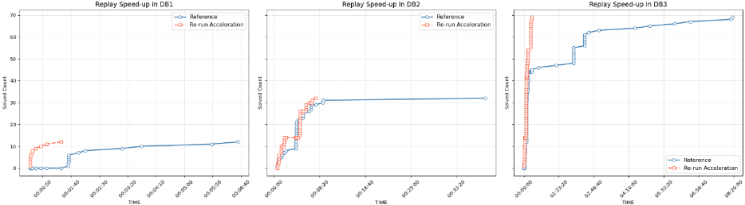
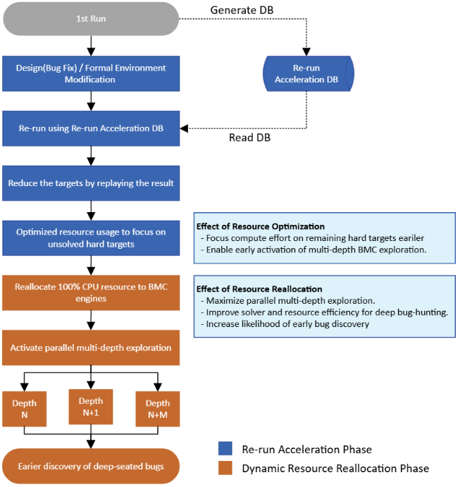
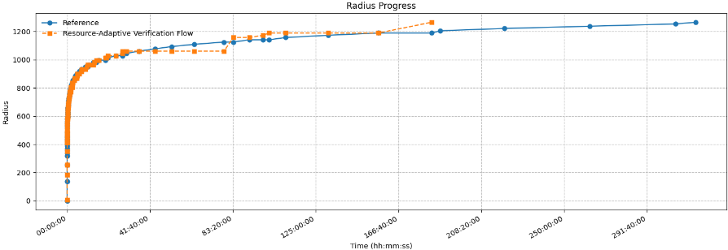

通过重运行加速与并行多深度有界模型检查（BMC）探索实现深层Bug的早期发现
论文针对复杂长序列设计在形式验证中因资源受限产生大量 inconclusive 结果、深层 corner-case bug 难以及时暴露的问题，提出资源自适应形式验证流程。方法将 Re-run Acceleration（对 COI 未变化的 property 重放历史 proven/covered/uncoverable 结果证书，消除冗余求解）与 Dynamic BMC Resource Reallocation（监测到 proven/uncoverable 更新停滞超过设定窗口后，经 TCL 脚本将 100% CPU 资源切换给并行多深度 BMC 引擎）串联。在 Samsung Flash Memory 设计上，DB3 全部 property 由 8 小时以上缩短至 20 分钟完成，同一 runtime 下多发现约 4 个结果，一个深层 deadlock bug 的发现时间由 316 小时缩短至 195 小时。论文同时指出该方法存在 proven 与 CEX 产出之间的权衡，且设计与约束大幅变更时重放命中率会急剧下降。
复杂长序列设计的形式验证在有限时间与算力下常无法完成 proof，产生 inconclusive 结果，意味着引擎已达到实际深度极限，更深的 corner-case bug 可能长期隐藏；传统应对依赖工程师手动 abstraction、decomposition 或多次运行 deeper target，耗时且资源密集；同时回归中大量 COI 未变化的 property 被重复求解，浪费算力并拖慢 bug 发现节奏。
三部分组合：1) Re-run Acceleration：将每轮形式验证的 proven/failed/covered/uncoverable 结果及设计知识（invariants、results certificate）存入数据库，后续运行中 COI 未变化的 property 直接重放验证结果，将天级求解缩短到分钟/秒级，快速建立 proven 基线并更早用作 helper assertions；2) 并行多深度 BMC 探索：在有多余处理器资源时，BMC 引擎在不同深度（如 N、N+1、N+2）以多个 solver 实例并行展开 SAT/SMT 求解，强化深层 CEX 检测；3) Dynamic Resource Allocation：辅助 TCL 控制进程监控 proven/uncoverable 更新速率，初始 48 小时后若 24 小时无进展，则删除全部引擎并将 100% CPU 资源重新分配给 BMC 引擎，实现从 proof 模式到 bug-hunting 模式的自动切换，无需人工干预。
在自研 memory 设计上，同一 runtime 内比传统流程多检测到约 4 个结果（结论中说明为 3 个 proven + 1 个 CEX，或更快找到相同 CEX）
Re-run Acceleration 使 DB3 全部 property 在 20 分钟内求解完成，而独立验证需 8 小时 16 分钟
基于 Flash Memory 项目一年形式验证数据：超过 97% 的 proven/vacuously proven/uncoverable 结果在最初 48 小时内获得；24 小时 no-progress 触发条件可覆盖 99.5% 以上此类结果
Case I：93 个 assertion/cover 环境中，典型混合引擎 157 小时得到 CEX；应用动态资源分配后 inconclusive property 在 102 小时检测到 CEX
32 核/400 小时实验：参考流程收敛率 67.7%，应用方法后多识别 10 个 CEX 结果，但 2 个 proven 结果无法复现
Case Study 1（Reset All CMD）：534 个 active targets 中重放 5 proven、15 covered、254 vacuity check pass；72 小时启用动态分配后 95 小时多发现 1 个 CEX，但整体相对参考无显著优势（139 个 inconclusive 下 32 核不足）
Case Study 2：真实 deadlock bug 发现时间由参考流程的 316 小时缩短至 195 小时（节省 120 小时）；DB2→DB3 因 COI 大幅变更无任何 property 重放成功
区别于传统 'prove-until-timeout' 固定资源分配与纯手动 deeper-target 调试，论文将结果证书重放与基于 no-progress 触发的动态 BMC 资源重分配组合为自动化的资源自适应流程：先以 Re-run Acceleration 快速建立 proven/uncoverable 基线并借助 assume-guarantee 缩小 COI，再将全部算力切换到并行多深度 BMC 做深层 bug 搜索；切换时机（初始 48 小时 + 24 小时无进展）由一年历史运行数据标定，并以 TCL 辅助进程自动执行。论文还用实验证明从一开始就 100% 依赖 BMC（单 property）反而无法检出 CEX，说明 proven 结果对深层探索的支撑作用。
相关度级别：high
命中能力域：2.5 形式验证与等效性检查 | 2.4 设计验证方法学 | 2.7 EDA/验证自动化与 AI 辅助
理由：论文核心是形式验证流程方法学：BMC 深度探索、property 结果重放与资源调度，直接命中 2.5 的 formal property checking 与 BMC 相关技术；其 bug fix 后回归加速与 inconclusive 管理属于 2.4 验证方法学与回归管理范畴；TCL 自动监控与引擎重配脚本属于 2.7 验证流程自动化。团队在 LPDDR5X/HBM4/UCIe 等存储与互连 IP 上同样面临深序列、深状态空间（多 FSM 交互 deadlock、协议 corner case）的形式验证挑战，inconclusive 结果与深层 bug 发现是日常交付痛点，该方法的流程结构与自动化手段可直接迁移。
建议动作：深入精读并做内部分享
Jungwoo Seo [1] (jwoo.seo@samsung.com), Dongyoung Kim [1] (dongzer0.kim@samsung.com), Sungjin Park [2] (sungjinpark@siemens.com), Mark Eslinger [3] (mark.eslinger@siemens.com), Juyeon Son [1] (jy1020.son@samsung.com), Gyehyun Na [1] (gh.na@samsung.com), Dongeun Lee [1] (dongeun1.lee@samsung.com)
[1] 三星电子有限公司，韩国，[2] Siemens EDA，韩国首尔，[3] Siemens EDA，美国圣克拉拉
摘要 - 对复杂且长序列的设计进行形式验证时，若证明无法在有限资源内完成，则不可避免地会遇到无定论的结果。传统方法要求工程师运用抽象、缩减模型，或依赖手动多次运行与更深目标技术来推动形式验证引擎进行更深入的探索，这既耗时又耗费大量资源。本文提出了一种将重运行加速（Re-run Acceleration）与面向有界模型检测（BMC）引擎的动态资源重分配相结合的方法学。重运行加速利用先前存储的验证结果，对影响锥（COI）未发生变化的属性进行重放，从而消除冗余计算并加速后续运行。随后，节省下来的处理器资源预算被转用于 BMC 的并行多深度探索。当在预定义的时间窗口内既未产生已证明（proven）结果、也未产生不可覆盖（uncoverable）结果时，该方法学将 100% 的可用处理器资源重新分配给 BMC 引擎。这使得各求解器能够并行地激进探索更深的状态空间，从而显著提高在验证时间线早期发现深层缺陷的可能性。在我们的存储器设计中，与传统流程相比，该方法在相同的总体运行时间内额外检测到约 4 个结果。
形式验证已成为现代半导体设计流程中不可或缺的组成部分，与仿真相比，它能够进行穷尽的状态空间探索，并对功能正确性提供更强的信心。然而，随着设计复杂度和时序深度的不断增加，无法得出结论（inconclusive）的结果在所难免。当利用可用的计算资源无法在分配的时间内完成证明时，工程师往往不得不求助于人工干预手段，例如抽象调优、分解或针对性的缺陷搜寻，而所有这些手段都需要大量的工程投入，并会拖慢缺陷发现的速度 [1]。
在实践中，无法得出结论的结果意味着形式验证引擎已达到其实际深度极限，这表明如果设计中存在更深层的边角情况（corner-case）缺陷，它们可能仍未被检测到。仅仅延长运行时间或增加引擎数量是低效的，因此需要对可用资源进行更智能的分配。
为应对这些挑战，我们提出了一种资源自适应的形式验证方法学，将重运行加速（Re-run Acceleration）与动态 BMC 资源重分配（Dynamic BMC Resource Reallocation）相结合。重运行加速通过重放上一次运行中已稳定的结果来消除冗余计算，而动态 BMC 分配则使工具能够在证明进展停滞时将计算重心转向更深的有界模型检验（BMC）。这两种机制协同作用，在相同的运行时间预算内减少了无法得出结论的结果，并加速了深层缺陷的发现，从而同时带来更高的验证效率和更早的设计洞察。
重运行加速（Re-run Acceleration）通过利用设计知识和先前运行的结果来提升形式化分析的效率。先前运行的结果——包括已证明、已失败、已覆盖和不可覆盖的属性——在当前运行中都会被加速处理。在每个验证周期中，形式化结果和设计知识都会被存储到数据库中。当后续针对相同的设计和属性集合执行形式化分析时，具有上述结果的属性通常能够被非常快速地求解。对于通常需要较长运行时间的属性，加速效果通常可将数天缩短至数分钟、将数小时缩短至数秒。这一机制消除了冗余证明，缩短了周转时间，并释放了计算能力 [2]。
由于已证明属性的结果能够被快速获得，这些结果可以在流程的更早阶段被用作辅助断言。这使得重运行加速能够从验证的较早阶段开始，将计算精力引导到更困难的属性上。
从历史上看，形式化工具会记录是哪个引擎求解了给定的属性，然后在后续运行中仅使用与求解给定属性集合相关的那些引擎。尽管这比初始运行能给出更好的结果，但它仍然要求引擎执行完整的分析，而要证明或证伪一个属性，运行时间可能仍然很长。重运行加速技术发展至今已有近十年，并在这一概念的基础上进行了扩展。在形式化运行期间，各引擎会对设计进行分析，并作为分析的一部分发现各种设计信息和不变量。这些数据在最初可能需要很长时间才能找到，但通常可以很快得到验证。针对每个已求解属性的这些数据构成了一个结果证书。在后续运行中，这些数据经过验证后即可快速复现先前的结果。重运行加速成功重放结果的能力取决于设计与属性的一致性。当设计/属性完全相同时，重运行加速的效果最佳，因此它主要被用于回归测试中。设计和属性的变化越大，影响重放资格的可能性就越大。因此，在涉及轻微设计或验证环境变更的迭代环境中，重运行加速能够提供最大的收益。
重运行加速的一个实际应用出现在缺陷被发现并修复之后。当在更新后的数据库上重新执行验证时，除产生反例（Counter Example, CEX）的那个属性之外，大多数属性通常都可以被重放而无需重新求解。这使得验证工作能够主要集中于触发该缺陷的特定属性上，而所有未受影响的结果则通过重运行加速重放被即时恢复。因此，修复后的回归测试可以在与先前验证状态保持完全一致的同时，以快得多的速度完成。
有界模型检验（Bounded Model Checking, BMC）通过基于 SAT/SMT 的转换，在设计的状态空间中探索至有限深度。现代形式化验证引擎通过并行多深度探索来增强这一过程，使得多个求解器实例能够同时在不同的深度（例如 N、N+1、N+2）上进行分析 [3]。这一策略加速了时序缺陷的发现，否则这些缺陷可能只在非常深的周期中才会显现。这也正是许多厂商一直在提供配备各种策略的 BMC 引擎的原因。
当计算硬件资源在满足活跃属性目标数量之外仍有富余时，并行多深度探索会被动态激活。在这种情况下，引擎将剩余的处理器分配给更深状态的探索，使 BMC 求解器能够并行遍历更长的迁移路径。该机制主要用于增强 CEX 检测，有效暴露在传统静态配置下通常无法到达的深层状态缺陷。
动态资源分配提供了连接面向证明（proof-oriented）引擎与缺陷猎取（bug hunting）引擎的自适应层。面向证明引擎是专门用于发现 proven 和 uncoverable 的引擎。相反，缺陷猎取引擎无法发现 proven，而是专门用于发现深层 CEX 或 covered。随着验证的推进，监控机制会跟踪 proven 或 uncoverable 更新的速率。当进展在可配置的时间窗口内陷入停滞时，所有可用的处理器会被动态地重新分配给 BMC 引擎。这种自动重新分配有效地将系统从证明模式切换到缺陷猎取模式，从而无需人工干预即可实现更深层次的状态探索。
在实践中，该机制通过一个与形式验证并行运行的辅助控制进程来运作。该进程持续监控运行时状态，并在满足预定义条件（例如不再出现新的 proven 或 uncoverable 更新）时自动应用用户定义的配置更改。这种外部协调使动态引擎重新分配能够在执行期间无缝完成，而不会中断正在进行的验证流程。
这种方法确保了计算资源的高效利用。早期阶段侧重于证明收敛和 helper 生成，而后期阶段则优先进行深度探索。其结果是一个智能化、自适应的验证流程，能够同时优化回归效率和缺陷检测能力。
在形式验证中，反例（CEX）是由验证引擎生成的完全指定的执行轨迹，用于形式化地证明某个属性被违反。CEX 由具体的输入激励序列、内部信号取值和状态迁移组成，这些内容将设计从合法初始状态驱动至属性被证伪的状态。
CEX 不仅指示失败的发生，还通过捕获失败发生时的确切条件，为违规的根本原因提供了直接的洞察。这使工程师能够详细地重放并分析失败场景。如果验证过程中使用的环境假设是有效的，则 CEX 暴露出一个必须修复的真实设计缺陷；否则，CEX 揭示的是环境建模问题，例如约束缺失或过于宽松，从而可能导致虚假失败。
在形式验证（formal verification）中，随着设计复杂度和时序深度的增长，无法得出结论的结果是不可避免的。当证明无法在可用的时间和资源内完成时，工程师被迫决定是继续推进证明，还是切换到缺陷挖掘（bug-hunting）模式。在实践中，这种切换往往是手动的、被动的——只有在大量时间已被耗费在无成效的证明分析之后才会发生。
这类无法得出结论的状态通常表明形式验证引擎已达到其深度极限，而更深的边角用例（corner-case）缺陷可能仍处于隐藏状态。仅仅延长运行时间很少能高效地解决这些情况；相反，需要对计算资源进行更有针对性的使用。
因此，我们的动机是建立一种验证方法学，它能够动态识别停滞状态，并将可用资源从面向证明的引擎重新分配给更深的有界模型检测（Bounded Model Checking, BMC）探索。通过这种方式，验证过程可以在相同的运行时间预算内，从尝试证明那些不太可能收敛的属性，转向更早地积极搜索深层缺陷。
所提出的方法将传统的“证明直到超时”（prove-until-timeout）流程转变为一种在证明收敛与缺陷发现深度之间取得平衡的资源自适应过程。
形式验证中的可扩展性挑战不仅源于冗余的回归测试，还源于深度探索的不足。所提出的流程集成了两种互补技术：重运行加速（Re-Run Acceleration）与动态BMC资源重分配（Dynamic BMC Resource Reallocation），以同时实现高效率与积极的缺陷挖掘。
我们将重运行加速应用于通用的形式验证数据库（DB）搭建流程。在初始验证环境（Initial DB）中，当针对死锁断言出现反例（CEX）时，调试发现若干控制点约束不正确，我们随后对其进行了修正。为验证修改后的行为，我们创建了包含100多个新覆盖属性的 Minor Fix DB1。在 Minor Fix DB1 中，死锁断言在9小时内得到证明。
然而，Minor Fix DB1 中仍存在两个无结论的覆盖属性。为解决这些问题，我们通过修改若干覆盖属性并添加一个额外假设，创建了 Minor Fix DB2。所有结果均在7小时40分钟内获得，但进一步审查发现，某个特定选项的一个假设被过度约束。因此，我们移除了该假设并创建了 Minor Fix DB3。在不复用任何结果的情况下，DB3 的完整验证在8小时16分钟内完成，并产生了包括死锁断言被证明在内的所有结果。各 DB 版本的结果如下方图1所示，供参考。
通过将重运行加速应用于从 Initial DB 到 Minor Fix DB3 的整个流程，我们测量了每次迭代的性能，并将其与基线进行了比较。如图1所示，这些结果展示了应用重运行加速与独立验证各 DB 版本两种情况下的性能差异。在第一个版本（DB1）中，被重放的属性很少，性能提升微乎其微。在 DB2 中，更多属性被成功重放，运行时间明显缩短。最后，在 DB3 中，改进变得十分显著：所有属性仅在20分钟内即求解完成，而在没有重运行加速的情况下则需要超过8小时。
总体而言，随着小规模更新的不断累积以及更多验证数据被存储到数据库中，重运行加速展现出越来越高的效率与准确性。
We evaluated how bug-finding performance changes when applying the BMC engine alone to deadlock assertions. In a verification environment containing 93 assertions and cover properties, a CEX result was obtained in 157 hours under a typical mixed engine configuration. To measure the effect of applying BMC exclusively, we re-ran the same case with a single deadlock checker, allocating 100% of the resources to BMC. Contrary to expectations, no CEX result was detected even after more than 200 hours of runtime. Even in other scenario tests, verifying the existing Inconclusive result with a single property did not reveal any additional improvements. This is shown in Case I and Case II in Table I.

Repeated experiments confirmed this behavior. When all properties were solved together, the deadlock bug was consistently discovered, but when only a single target was verified, the result became inconclusive. The same phenomenon was observed in other designs where CEX occurred at deeper cycles. That's because some assertions change to assumptions after they are proven and reduce the COI for primary assertion. That's called Assume-Guarantee [4]. These findings suggest that dedicating time and resources to first obtain proven or uncoverable results, rather than relying solely on BMC analysis from the beginning, allows the BMC engines to achieve deeper and more effective exploration later.
To identify the optimal time to spend on proof analysis, we analyzed one year of formal verification data from previous Flash Memory projects to understand when proven or uncoverable results typically saturate. In most cases, over 97% of proven, vacuously proven, and uncoverable results were obtained within the first 48 hours. In a large environment with more than 500 properties, results continued to appear intermittently at intervals ranging from 1-2 hours up to 10-20 hours, and some proven results still emerged even after 200 hours.
Based on this observation, we evaluated no-progress trigger conditions to determine when to switch resources toward BMC. After running for the initial 48 hours, we tested additional runs with no-progress conditions set to 12 and 24 hours. The 24-hour setting achieved more than 99.5% coverage of proven, vacuously proven, and uncoverable results providing an efficient balance between proof completion and deep-state exploration.
To automate this process, a TCL control script was implemented to monitor verification progress and dynamically reconfigure engines when the defined no-progress condition was met, enabling adaptive allocation between proof-oriented and BMC engines.
| Reference w/ all Props.Result | Reference w/ all Props.Turnaround time (TAT) | Reference w/ 1 target.Result | Reference w/ 1 target.Turnaround time (TAT) | Dynamic Resource Allocation for BMC engines + no progress 24h.Result | Dynamic Resource Allocation for BMC engines + no progress 24h.Turnaround time (TAT) | |
|---|---|---|---|---|---|---|
| Case I | Inconclusive | 200:00:00 | Inconclusive | 200:00:00 | CEX | 102:46:07 |
| Case II | CEX | 157:52:37 | Inconclusive | 200:00:00 | CEX | 87:16:59 |
| | Reference w/ all Props.Result | Reference w/ all Props.Turnaround time (TAT) | Reference w/ 1 target.Result | Reference w/ 1 target.Turnaround time (TAT) | Dynamic Resource Allocation for BMC engines + no progress 24h.Result | Dynamic Resource Allocation for BMC engines + no progress 24h.Turnaround time (TAT) |
当仅以单一目标进行测试时，Case I 和 Case II 均得到不确定（inconclusive）的结果。这是因为它们无法利用其他已证明（proven）或已覆盖（covered）的目标。该测试表明，缺陷检测有时依赖于已证明和已覆盖的结果。
针对有界模型检验（BMC）引擎应用动态资源分配（Dynamic Resource Allocation）的第二项测试，是在未观察到反例（CEX）的环境下进行的。我们使用典型的混合引擎和 32 个核心运行了 400 小时，但 Reference 显示的收敛率为 67.7%，如表 II 所示。应用该方法后，我们能够额外识别出 10 个 CEX 结果。然而，在通用引擎配置下发现的两条已证明条目无法再被复现。这表明已证明结果与 CEX 结果之间存在权衡。
在将动态资源分配应用于 BMC 时，确定首要的验证目标十分重要。这包括决定是优先实现已证明属性的收敛，还是专注于在状态空间更深处发现 CEX 结果。根据验证目标选择合适的目标，能够更有效地利用计算资源，并使该方法的收益最大化。
| Reference | Dynamic Resource Allocation for BMC engines + noprogress 24h | |
|---|---|---|
| Inconclusive | 79 | 71 |
| Possibly vacuously proven | 1 | 1 |
| Covered | 21 | 21 |
| Uncoverable | 1 | 1 |
| Proven | 140 | 138 |
| CEX | 0 | 10 |
| Vacuously proven | 6 | 6 |
| Convergence | 67.7% | 71.0% |
| | Reference | Dynamic Resource Allocation for BMC engines + noprogress 24h |
在所提出的流程中，当在可配置的时间窗口内既未出现已证明结果、也未出现不可覆盖结果时，将触发把所有可用处理器动态重新分配给 BMC 引擎实例。这使 BMC 引擎能够充分利用其全部并行能力，从而使深层缺陷的暴露时间远早于采用传统固定分配策略的情况。
如下方图 3 所示，所提出的方法将 Re-run Acceleration（重运行加速）阶段与针对 BMC 引擎的 Dynamic Resource Reallocation（动态资源重分配）阶段相集成，以在形式验证中同时实现效率与深度。每个阶段都有各自的优势与局限。该阶段通过消除冗余工作并在多次交互式运行之间最大化复用，从而加速回归验证。然而，即使影响锥（COI）未发生变化的性质能够被快速求解，这也并不能保证剩余的复杂目标会更快收敛，也不能保证深层缺陷会在有限资源内被暴露出来。
相比之下，BMC 引擎能够提供强大的深层状态探索能力，但其效率在很大程度上取决于启用时机与资源分配。过晚启用 Dynamic Resource Reallocation 会延长缺陷检测的周转时间，而过早激活它则可能减少已证明结果的数量，而这些结果本可在之后用作辅助断言。
为了平衡这一行为，资源自适应验证（Resource-Adaptive Verification）流程利用 Re-run Acceleration 快速建立一个由已证明结果与不可覆盖结果构成的稳定基线。如图 3 上方（蓝色）区域所示，该阶段重放先前结果、减少活跃目标，并优化资源使用，以聚焦于尚未求解的性质。一旦该阶段的进展趋于稳定，可用算力便会被转用于针对 BMC 引擎的动态资源分配阶段（图中以橙色显示）。此时，100% 的 CPU 资源被重新分配给 BMC 引擎，以实现并行多深度探索。32 个核心的数量与 400 小时的时间限制均保持不变。然而，通过更高效地利用相同的资源，我们可以改善结果。
这种顺序式过渡使浅层性质得以早期收敛，同时在后期阶段积极追求更深入的探索。通过这一过程，Re-run Acceleration 确保求解器资源得到充分利用，从而为高效的缺陷搜寻准备好环境。当进展停滞时，该阶段会激活其全部并行能力，以比传统固定分配流程更快的速度揭示深层潜伏的缺陷。
总体而言，该统一流程将广度与深度之间传统的权衡关系转变为一种互补的先后序列：广度在早期通过复用与快速收敛来实现，而深度则在后期通过并行多深度探索来实现。

| Reference | Resource Adaptive Verification Flow | |
|---|---|---|
| Inconclusive | 139 | 135 |
| Covered | 17 | 17 |
| Uncoverable | 1 | 1 |
| Proven | 368 | 371 |
| CEX | 3 | 4 |
| Possibly vacuously proven | 1 | 1 |
| Convergence | 73.7% | 74.5% |
| | Reference | Resource Adaptive Verification Flow |
我们还在另一款产品上测试了死锁擦除场景。该场景通过确保所有相关的有限状态机（FSM）在擦除条件下完成其操作并正确进行状态转换，来验证在擦除命令序列执行期间不会发生死锁。
在参考流程中，首个 DB1 在 20 分钟内便发现了一个环境性缺陷，而在对修复后的 DB2 进行重新验证时，经过 316 小时才发现了一个真实缺陷。将 Resource Adaptive Verification 方法论应用于该案例后，我们重放了来自 DB1 的两个已证明结果和两个空泛性检查通过（covered）结果。在 72 小时后启用 Dynamic Resource Allocation 以最大化多深度探索之后，该真实死锁缺陷在 195 小时后被发现。如图 4 所示，Resource Adaptive 验证将发现该深层缺陷所需的时间缩短了 120 小时。
随后，我们将该测试应用于 DB3，其中包含了对 DB2 中所发现缺陷的修复。当我们使用传统形式化方法对 DB3 验证 400 小时后，在 38 个活动目标中获得了 32 个结果，而 Deadlock Checker 仍无定论。当时，剩余属性的平均半径为 1206.7，其中半径指的是为证明或证伪某一属性而必须探索的设计状态空间深度。我们还加载了来自 DB2 的 Re-run Acceleration 数据库并在 DB3 上运行，但遗憾的是没有任何属性被重放。在 400 小时结束后，验证再次得到了与参考流程相同的 32 个属性结果，且 Deadlock Checker 仍无定论。此时剩余属性的平均半径为 1225.3。
这些观察结果表明，在从 DB2 更新至 DB3 时，大量的内部设计与约束变更改变了所有属性的影响锥（COI），导致没有任何属性符合通过 Re-run Acceleration 进行重放的条件。最终，在 DB3 中仅应用了 Dynamic Resource Allocation 在最大化多深度探索方面的效果。

本文介绍了一种将重运行加速（Re-run Acceleration）与动态资源重分配（Dynamic Resource Reallocation）相结合以实现并行多深度探索的形式验证流程。通过重放稳定结果并利用有界模型检验（BMC）引擎的并行多深度探索能力，所提出的方法减少了无定论结果，并能显著更早地暴露深层缺陷。
在本文中，我们证明了所提出的资源自适应验证（Resource Adaptive Verification）流程在应用于初始验证环境搭建过程时尤为有效，因为在此过程中设计或约束的微小变更频繁发生。当发现缺陷、应用修复并重新执行该流程时，该方法同样有效。在我们的存储器设计上，所提出的方法在相同的运行时间内获得了三个已证明（proven）结果和一个反例（CEX）结果，或以更快的速度找到相同的 CEX 结果，这表明资源优化的形式验证同时实现了更快的回归和更深的缺陷发现。
另一方面，在设计和约束发生显著变化的情况下，我们观察到能够通过重运行加速进行重放的属性数量会急剧减少。因此，未来的工作将专注于开发即使在模块层次结构或实例名称等结构元素发生变化时仍能保持性能的方法。